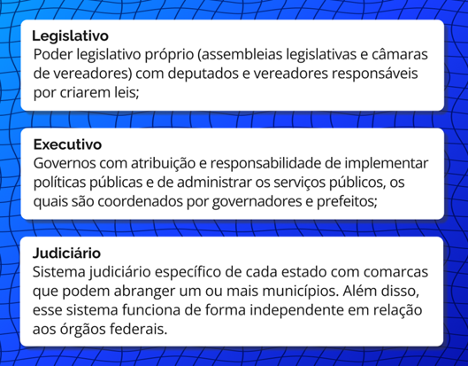

Trabalho na Constituição de 1988
A Constituição de 1988 estabeleceu, em seu artigo 60, que os direitos e garantias individuais são cláusulas pétreas (“de pedra”), ou seja, não podem ser abolidos ou reduzidos mesmo por emendas constitucionais, garantindo assim a sua existência ao longo prazo. Estes direitos e garantias estão listados ao longo do texto da CF/88, em especial no artigo 5°. Também se classificam como tais os direitos sociais e, assim, novos direitos e garantias podem ser acrescentados à Constituição.
O artigo 6º enumera os direitos sociais, originalmente: a educação, a saúde, o trabalho, o lazer, a segurança, a previdência social, a proteção à maternidade e à infância e a assistência aos desamparados. Posteriormente, foram acrescentados os direitos à moradia (2000), alimentação (2010), transporte (2015) e renda mínima (2021).
Título: Direitos sociais
Fonte: Prosa (2024b).
Entretanto, já no artigo 1º, anuncia a sua ambiguidade em relação ao trabalho:
Artigo 1º da Constituição federal
Art. 1º A República Federativa do Brasil, formada pela união indissolúvel dos Estados e Municípios e do Distrito Federal, constitui-se em Estado Democrático de Direito e tem como fundamentos:
...
IV - os valores sociais do trabalho e da livre iniciativa
(Brasil, 1988).
Também no primeiro artigo relativo aos direitos e às garantias fundamentais, o trabalho é citado:
Artigo 5º da Constituição federal
Art. 5º Todos são iguais perante a lei, sem distinção de qualquer natureza, garantindo-se aos brasileiros e aos estrangeiros residentes no País a inviolabilidade do direito à vida, à liberdade, à igualdade, à segurança e à propriedade, nos termos seguintes:
...
XIII - é livre o exercício de qualquer trabalho, ofício ou profissão, atendidas as qualificações profissionais que a lei estabelecer
(Brasil, 1988).
Além disso, a vinculação dos direitos dos trabalhadores com sua formação aparece de forma implícita no artigo 7º, que trata dos direitos dos trabalhadores urbanos e rurais. Já o artigo 8º é dedicado à liberdade de organização profissional e sindical; o trabalho aparece também nos artigos da "Ordem econômica" (Artigo 170, inciso VIII) como “busca do pleno emprego”; da Política agrícola (Art.187); e ainda na abertura do título da "Ordem social" (que inclui seguridade, previdência, assistência social, saúde e educação), com a seguinte formulação: “a ordem social tem como base o primado do trabalho, e como objetivo o bem-estar e a justiça sociais” (Art. 193).
Artigo 7º da Constituição Federal
Art. 7º São direitos dos trabalhadores urbanos e rurais, além de outros que visem à melhoria de sua condição social:
...
V - piso salarial proporcional à extensão e à complexidade do trabalho;
...
XXXII - proibição de distinção entre trabalho manual, técnico e intelectual ou entre os profissionais respectivos
(Brasil, 1988).
Resumindo, embora garanta direitos básicos do trabalho, a CF/88 o faz dentro da ordem econômica capitalista, como não poderia deixar de ser, dadas as condições históricas e políticas da sociedade brasileira.
Antes de analisar a presença da educação na Constituição, é necessário fazer uma digressão para abordar o Federalismo no Brasil, que é fundamental para compreender como se organiza a educação, em particular, os sistemas de ensino e do regime de colaboração.
Federalismo

Título: Legislativo, Executivo e Judiciário
Fonte: Prosa (2024c).
Embora esta estrutura não seja nova, a CF/88 estabeleceu dispositivos para promover a descentralização, entre eles os repasses obrigatórios de parcela dos impostos arrecadados pela União. Entretanto o Federalismo brasileiro enfrenta vários desafios vinculados à:
- Permanência das desigualdades regionais: a União entra, então, como equalizadora, a exemplo do Fundo de Manutenção da Educação Básica (FUNDEB), que busca manter o mesmo valor de investimento por estudante em todo o país;
- Conflitos federativos: de origem fiscal (arrecadação de impostos) e econômica (atração de investimentos e consequente geração de empregos);
- Contradição: entre a descentralização e a universalização; equalização e unificação dos serviços, que permitiram avanços como o Sistema Único de Saúde (SUS), o Sistema Único de Assistência Social (SUAS) e o Regime Geral da Previdência Social (RGPS).
Há muito que se fala na necessidade de revisão do Pacto Federativo, processo ainda em curso que busca um melhor equilíbrio das responsabilidades e recursos entre os diferentes níveis de governo. O seu objetivo é promover uma governança que contribua para garantir que todos os cidadãos tenham acesso, em condições de igualdade, a serviços e direitos de forma mais eficiente e equitativa. No âmbito da educação, os debates sobre o Sistema Nacional de Educação (SNE), que articularia os sistemas estaduais e municipais, arrastam-se, bem como a operacionalização de forma mais efetiva do regime de colaboração – o qual prevê a cooperação entre União, estados e municípios para assegurar direitos e aprimorar a gestão pública de maneira eficiente e integrada – previsto na CF/88.